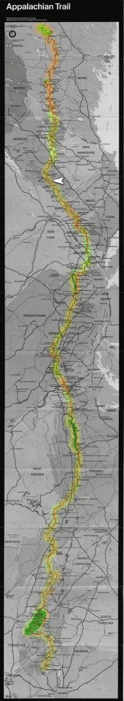

| Home | The Fox | Statistics | Maps | Churches |
StatusConfirmed - Last contact with the Fox was from:Confirmed - Danby, VT Confirmed - 1643.3 miles complete (76.07%) Confirmed - 516.9 miles to go (23.93%) Danby VT[12 July 1999] The Fox reported in this weekend from the Green Mountain State where he spent Saturday and Sunday night with the parents of a friend. This places him more than three quarters of the way to Maine from the trail's beginning in Georgia. |

|